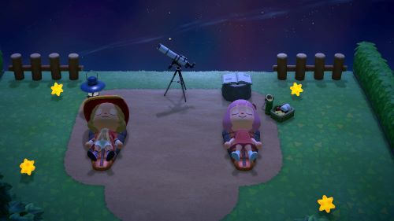
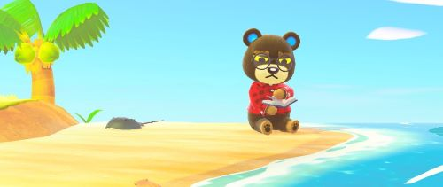

Join the Community
In more recent Animal Crossing games, connecting with fellow players has become a huge part of the gaming experience. Whether it's streaming gameplay online, sharing design ideas on Pinterest, or just visiting each others islands, players find a ton of creativity and friendship around every corner. This page is dedicated to some of my favorite streamers on Youtube, bloggers, and some other links to help you dive into the Animal Crossing community.
Blog Posts

Photo Gallery